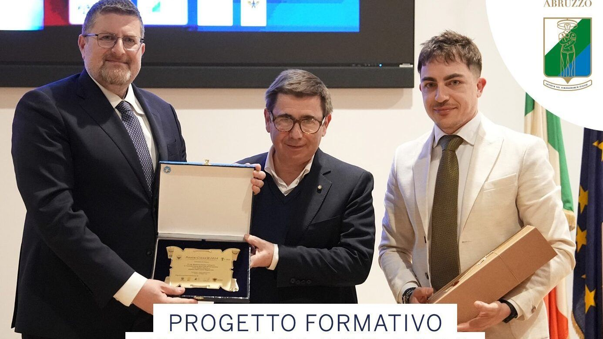

Desidero ringraziare personalmente tutti gli studenti, i partecipanti, La preside M. Chiara Marola, l’Ass. Roberto Santangelo, Il Dir. Gen. Arta Abruzzo Maurizio Dionisio, il Dir. Gen. USRA Abruzzo Massimiliano Nardocci, il Comm. Capo Pieremidio Bianchi, l’Associazione 3:33 che presiedo, il presidente onorario del Centro Studi La Meta Ripetizioni e Doposcuola Claudia Pagliariccio e soprattutto, Massimo Comparini per aver accettato l’invito e per aver regalato ai nostri giovani studenti e a tutta la Città dell’Aquila una Lectio Magistralis sullo Spazio di altissimo livello, che ha reso quella di ieri una straordinaria ed ineguagliabile giornata di riflessione, di cultura e di festa che rimarrà indelebile nelle nostre menti e nei nostri cuori!
Siamo già a lavoro per l’edizione 2025, per la quale possiamo già annunciare la conferma di partecipazione dei CTO di due importanti startup e imprese italiane con ampio respiro internazionale!
Il video viene caricato da YouTube solo quando premi play. Guarda su YouTube